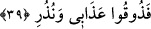
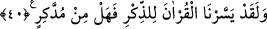

39. İşte azabımı ve uyarılarımı tadın! (denildi).
Azaplarını ağırlaştırmak için azap esnasında Allah tarafından buyurulan sözdür.
40. Andolsun biz Kur’ân’ı, öğüt almak için kolaylaştırdık. O halde düşünüp ibret
alan yok mu?
Bu âyet-i kerîme hakkında açıklama önceden geçmişti. Ayrıca bu âyet-i kerîme,
insanların yanılmamaları ve aymazlığa düşmemeleri için uyarma konusunda başlangıç
cümlesidir.
Bunun
gibi,
“O
halde
Rabbinizin
nimetlerinden
hangisini
yalanlayabilirsiniz!” (er-Rahmân, 55/13) ve “O gün (peygamberi ve âhireti) yalan
sayanların vay hâline!” (el-Mürselât, 77/15) ve benzeri sûrelerde çok tekrarlanan
haberler, kıssalar, tehdîdler, uyarmalar ve sınırlamalar da bu kabildendir. Çok tekrar,
mânâların kulaklara ve kalplere yerleşlemesine, gönüllerde kökleşmesine sebep olur.
Bir şey sık sık tekrar edilirse, kalbe daha fazla yerleşir, gönülde daha da kökleşir,
hafızaya en iyi şekilde kazınır, hatırlamaya en sağlam hale gelir ve unutmaktan da büyük
ölçüde uzaklaşır.
Bu olayda, Lût (a.s.) durumundaki ruh ile onun kavmi durumundaki nefs-i emmârenin
birbirine yaptıklarına ve Allah’ın rûhânî sıfatları nedeniyle rûhu kurtarması ve inkârcı
kavim durumundaki nefs-i emmâreyi beşerî sıfatları sebebiyle nefisleri ve cinsî ilişki
kurma hevesinden ibaret şehevî duygularına yenilenleri nasıl mahvettiğine işâret vardır.
Nefsin bu kötü sıfatlarını “Lâ ilâhe illallah” zikrinin taşlarıyla kırıp kahretmek ve bu
sıfatların zıddı olan iffet sıfatıyla tedavi etmek gerekir. İffet, aşırılıktan ibaret kötülük
taraflısı şehvet gücü ile onun tam tersi olan sönüklük arasında düzenleyici bir varlıktır.
İffetli kişi, bütün işlerine dînî ve ahlâkî ölçüler içinde yaklaşan kişidir. Şehvet yanlısı
kişi bunun tam aksine davranır. Şehvet duygusu, kötülükleri elde etmek için nefsin
hareketinden ibarettir. Nefsin durumu ya ifrat veya tefrit durumunda aşırı olmaktır. Bu
sebeple nefsin bütün sıfat ve kuvvetlerini ıslah etmek kaçınılmaz bir görevdir. Çünkü
nefsin bu nitelik ve kuvvetleri, insanları kötülük ve ahlaksızlık yapmağa ve aralarına
fitne düşürmeğe, kötülükleri tahrik etmeğe yöneltir. Allah’tan hak yolda sebat etmemiz
için yardım ve başarı ihsân etmesini dileriz.
[153]. Aclûnî, II,368.